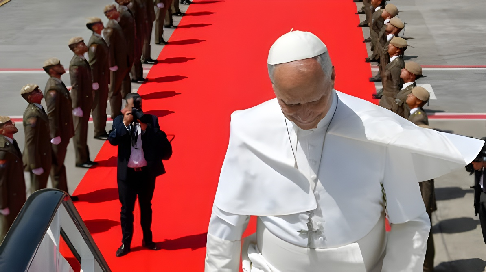

Du 6 au 12 juin 2026, le pape Léon XIV a effectué son quatrième voyage apostolique hors d'Italie, en Espagne. Première visite papale dans le pays depuis Benoît XVI en 2011, ce périple de sept jours — entre Madrid, Barcelone et les îles Canaries — a été marqué par des premières historiques : discours devant le Parlement, inauguration de la tour la plus haute de la Sagrada Família, et rencontre avec les migrants aux Canaries.
Le pape a atterri à l'aéroport Adolfo Suárez de Madrid le 6 juin 2026, accueilli avec les honneurs d'une visite d'État par le roi Felipe VI et la reine Letizia au Palais royal. Cette réception solennelle traduit la nature hybride du voyage : à la fois mission pastorale et engagement diplomatique au plus haut niveau. Dès le premier soir, Léon XIV a visité le projet social « CEDIA 24 horas » géré par Caritas, avant de présider une veillée de prière avec les jeunes sur la Plaza de Lima.
Le lendemain, le 7 juin — fête du Corpus Christi —, il a célébré une messe solennelle sur la Plaza de Cibeles, l'une des places les plus emblématiques de la capitale. Il a ensuite rencontré les membres de son ordre, les Augustins, ainsi que des personnalités culturelles et sportives au Palacio de Deportes. Le lundi 8 juin, après un entretien avec le Premier ministre Pedro Sánchez à la nonciature, il s'est rendu au Congrès des Députés pour prononcer un discours devant les membres des deux chambres réunies en session commune — une première absolue dans l'histoire de l'Espagne, qu'aucun de ses prédécesseurs, ni Jean-Paul II ni Benoît XVI, n'avait réalisée. Après-midi, il a conduit une prière à la cathédrale de l'Almudena, puis s'est adressé à la communauté diocésaine dans l'enceinte du stade Santiago Bernabéu. Son séjour madrilène s'est conclu le 9 juin par une rencontre avec des bénévoles au Palais des Congrès de l'IFEMA.
Le voyage s'est inscrit dans un contexte politique et social tendu. Les relations entre l'Église catholique et le gouvernement de gauche de Pedro Sánchez sont notoirement fraîches : l'exécutif a légalisé l'euthanasie en 2021 et réduit la place de l'enseignement religieux dans les écoles. Parallèlement, selon l'Atlas de la Polarisation de More in Common (2025), près de 5 millions d'Espagnols ont rompu une relation personnelle au cours de l'année écoulée en raison de divergences idéologiques, soit 14 % de la population adulte. Pour Léon XIV, ce voyage représentait donc aussi un appel au dialogue dans une société profondément divisée.
La devise choisie pour ce voyage apostolique, tirée de l'Évangile selon saint Jean, résume l'ambition du pontife : « Levez les yeux ». Une invitation à dépasser les clivages du quotidien pour retrouver une vision commune. Dans ses discours, le pape a plaidé pour la réconciliation nationale et la dignité de chaque personne, évitant de se positionner directement dans le débat politique espagnol tout en adressant des messages clairs sur les grandes questions sociales.
Arrivée à Madrid. Accueil au Palais royal par le roi Felipe VI. Visite du projet social Caritas, veillée de prière avec les jeunes Plaza de Lima.
Messe du Corpus Christi Plaza de Cibeles. Rencontre avec les Augustins et des figures culturelles au Palacio de Deportes.
Entretien avec Pedro Sánchez. Discours historique devant le Parlement espagnol. Prière à l'Almudena. Adresse à la communauté diocésaine au Bernabéu.
Rencontre avec les bénévoles à l'IFEMA. Départ pour Barcelone. Liturgie des heures à la cathédrale Sainte-Eulalie. Veillée de prière au stade olympique.
Visite du centre pénitentiaire « Brians 1 ». Rosaire et déjeuner à l'abbaye de Montserrat. Inauguration de la tour de Jésus-Christ à la Sagrada Família. Messe solennelle pour le centenaire de la mort de Gaudí.
Îles Canaries : rencontre avec les migrants à Arguineguín (Gran Canaria), messe au stade de Gran Canaria, rencontre avec des réfugiés au centre Las Raíces (Tenerife), messe dans le port de Santa Cruz.
Arrivé à Barcelone le 9 juin, Léon XIV a d'abord célébré la liturgie des heures à la cathédrale Sainte-Eulalie, avant de présider une veillée de prière au stade olympique Lluís Companys. Le lendemain, 10 juin, il s'est rendu à l'abbaye bénédictine de Montserrat pour y réciter le chapelet, avant de déjeuner avec les moines bénédictins. L'après-midi, il a visité le centre pénitentiaire « Brians 1 », renouant avec la tradition de la « pastorale des périphéries » qui a marqué son prédécesseur François.
Le temps fort de son séjour barcelonais a été l'inauguration, en soirée du 10 juin, de la tour de Jésus-Christ de la Sagrada Família. Culminant à 172,5 mètres (566 pieds), cette tour — la plus haute de la basilique conçue par Antoni Gaudí — fait de l'édifice la plus haute église catholique du monde, dépassant la basilique Notre-Dame-de-la-Paix de Yamoussoukro en Côte d'Ivoire. La date n'est pas anodine : le 10 juin 2026 marque exactement le centième anniversaire de la mort de Gaudí, renversé par un tramway à Barcelone en 1926. Le pape a présidé une messe solennelle pour célébrer cette double commémoration.
« Levad los ojos. »
— Devise du voyage apostolique de Léon XIV en Espagne, juin 2026, tirée de l'Évangile selon saint JeanLa dernière étape du voyage, aux Canaries les 11 et 12 juin, était placée sous le signe de la question migratoire. Les îles Canaries constituent l'un des principaux points d'entrée en Europe pour les migrants en provenance d'Afrique subsaharienne traversant l'Atlantique à bord d'embarcations de fortune. En se rendant au port d'Arguineguín à Gran Canaria, puis au centre d'accueil Las Raíces à Tenerife, Léon XIV a voulu donner une visibilité internationale à ces hommes, femmes et enfants que les circuits médiatiques ordinaires rendent souvent invisibles. Il a également célébré deux messes de plein air — au stade de Gran Canaria et dans le port de Santa Cruz de Tenerife — avant de reprendre l'avion vers Rome le 12 juin en fin d'après-midi.
Ce choix des Canaries revêt une signification symbolique forte : son prédécesseur François avait lui-même exprimé le souhait de visiter l'archipel sans jamais pouvoir le réaliser. Léon XIV a ainsi accompli un geste pastoral attendu, tout en portant un message politique clair sur la nécessité d'une réponse européenne solidaire à la crise migratoire.
| Étape | Dates | Temps forts |
|---|---|---|
| Madrid | 6 – 9 juin | Accueil royal, messe Cibeles, discours Parlement, Bernabéu |
| Barcelone | 9 – 11 juin | Montserrat, prison, inauguration Sagrada Família, messe Gaudí |
| Gran Canaria | 11 juin | Rencontre migrants Arguineguín, messe stade Gran Canaria |
| Tenerife | 12 juin | Centre Las Raíces, messe port Santa Cruz, retour à Rome |
Ce voyage apostolique de sept jours dépasse le cadre purement religieux. En prenant la parole devant le Parlement espagnol — une première dans l'histoire — Léon XIV a affirmé que l'Église entend rester un interlocuteur du débat démocratique, sans pour autant s'y dissoudre. L'Espagne, pays longtemps identifié au catholicisme traditionnel, traverse une sécularisation accélérée : la pratique religieuse recule, les demandes de baptême chez les jeunes adultes connaissent pourtant un regain notable. En inaugurant la Sagrada Família et en se rendant auprès des migrants des Canaries, le pape a tracé les deux axes de son pontificat : l'enracinement dans une civilisation chrétienne pluriséculaire et l'ouverture inconditionnelle aux « périphéries du monde ».
Del 6 al 12 de junio de 2026, el papa León XIV realizó su cuarto viaje apostólico fuera de Italia, en España. Primera visita papal al país desde Benedicto XVI en 2011, este periplo de siete días —entre Madrid, Barcelona y las islas Canarias— estuvo marcado por primeras históricas: discurso ante el Parlamento, inauguración de la torre más alta de la Sagrada Família, y encuentro con los migrantes en Canarias.
El papa aterrizó en el aeropuerto Adolfo Suárez de Madrid el 6 de junio de 2026, recibido con los honores de una visita de Estado por el rey Felipe VI y la reina Letizia en el Palacio Real. Esta recepción solemne refleja la naturaleza híbrida del viaje: a la vez misión pastoral y compromiso diplomático al más alto nivel. Ya el primer día, León XIV visitó el proyecto social « CEDIA 24 horas » de Cáritas, antes de presidir una vigilia de oración con los jóvenes en la Plaza de Lima.
Al día siguiente, 7 de junio —festividad del Corpus Christi—, celebró una misa solemne en la Plaza de Cibeles, una de las plazas más emblemáticas de la capital. Después se reunió con los miembros de su orden, los Agustinos, y con personalidades culturales y deportivas en el Palacio de Deportes. El lunes 8 de junio, tras una entrevista con el presidente del gobierno Pedro Sánchez en la nunciatura, acudió al Congreso de los Diputados para pronunciar un discurso ante los miembros de las dos cámaras reunidas en sesión conjunta — una primera absoluta en la historia de España, que ninguno de sus predecesores, ni Juan Pablo II ni Benedicto XVI, había realizado. Por la tarde, presidió una oración en la catedral de la Almudena y se dirigió a la comunidad diocesana en el estadio Santiago Bernabéu. Su estancia madrileña concluyó el 9 de junio con un encuentro con voluntarios en el Palacio de Congresos IFEMA.
El viaje se inscribe en un contexto político y social tenso. Las relaciones entre la Iglesia católica y el gobierno de izquierda de Pedro Sánchez son notoriamente frías: el ejecutivo legalizó la eutanasia en 2021 y ha reducido el peso de la enseñanza religiosa en las escuelas. Al mismo tiempo, según el Atlas de la Polarización de More in Common (2025), cerca de 5 millones de españoles han roto una relación personal en el último año por diferencias ideológicas, es decir, el 14 % de la población. Para León XIV, este viaje era también un llamado al diálogo en una sociedad profundamente dividida.
El lema elegido para este viaje apostólico, tomado del Evangelio según san Juan, resume la ambición del pontífice: « Levad los ojos ». Una invitación a superar las divisiones cotidianas para encontrar una visión común. En sus discursos, el papa abogó por la reconciliación nacional y la dignidad de cada persona.
Llegada a Madrid. Recepción en el Palacio Real por el rey Felipe VI. Visita al proyecto social Cáritas, vigilia de oración con los jóvenes en la Plaza de Lima.
Misa del Corpus Christi en la Plaza de Cibeles. Encuentro con los Agustinos y figuras culturales en el Palacio de Deportes.
Entrevista con Pedro Sánchez. Discurso histórico ante el Parlamento. Oración en la Almudena. Alocución a la comunidad diocesana en el Bernabéu.
Encuentro con voluntarios en IFEMA. Llegada a Barcelona. Liturgia de las horas en la catedral de Santa Eulalia. Vigilia de oración en el estadio olímpico.
Visita al centro penitenciario « Brians 1 ». Rosario y almuerzo en la abadía de Montserrat. Inauguración de la torre de Jesucristo en la Sagrada Família. Misa solemne por el centenario de la muerte de Gaudí.
Islas Canarias: encuentro con migrantes en Arguineguín (Gran Canaria), misa en el estadio de Gran Canaria, encuentro con refugiados en Las Raíces (Tenerife), misa en el puerto de Santa Cruz.
Llegado a Barcelona el 9 de junio, León XIV celebró primero la liturgia de las horas en la catedral de Santa Eulalia, antes de presidir una vigilia de oración en el estadio olímpico Lluís Companys. Al día siguiente, 10 de junio, visitó la abadía benedictina de Montserrat para rezar el rosario, almorzando luego con los monjes. Por la tarde, acudió al centro penitenciario « Brians 1 », retomando la tradición de la « pastoral de las periferias » que marcó a su predecesor Francisco.
El momento culminante de su estancia barcelonesa fue la inauguración, al anochecer del 10 de junio, de la torre de Jesucristo de la Sagrada Família. Con 172,5 metros de altura, esta torre — la más alta de la basílica diseñada por Antoni Gaudí — convierte al edificio en la iglesia católica más alta del mundo, superando a la basílica Nuestra Señora de la Paz de Yamoussoukro (Costa de Marfil). La fecha no es casual: el 10 de junio de 2026 marca exactamente el centenario de la muerte de Gaudí, atropellado por un tranvía en Barcelona en 1926. El papa presidió una misa solemne para celebrar esta doble conmemoración.
« Levad los ojos. »
— Lema del viaje apostólico de León XIV a España, junio de 2026, tomado del Evangelio según san JuanLa última etapa del viaje, en Canarias los días 11 y 12 de junio, estuvo centrada en la cuestión migratoria. Las islas Canarias constituyen uno de los principales puntos de entrada a Europa para los migrantes procedentes del África subsahariana que cruzan el Atlántico en embarcaciones precarias. Al dirigirse al puerto de Arguineguín en Gran Canaria, y luego al centro de acogida Las Raíces en Tenerife, León XIV quiso dar visibilidad internacional a estos hombres, mujeres y niños que los circuitos mediáticos ordinarios a menudo vuelven invisibles. También celebró dos misas al aire libre —en el estadio de Gran Canaria y en el puerto de Santa Cruz de Tenerife— antes de emprender el regreso a Roma el 12 de junio por la tarde.
Esta elección de Canarias reviste una fuerte significación simbólica: su predecesor Francisco había expresado el deseo de visitar el archipiélago sin poder realizarlo nunca. León XIV cumplió así un gesto pastoral esperado, al tiempo que lanzó un mensaje político claro sobre la necesidad de una respuesta europea solidaria ante la crisis migratoria.
| Etapa | Fechas | Momentos clave |
|---|---|---|
| Madrid | 6 – 9 jun. | Recepción real, misa Cibeles, discurso Parlamento, Bernabéu |
| Barcelona | 9 – 11 jun. | Montserrat, prisión, inauguración Sagrada Família, misa Gaudí |
| Gran Canaria | 11 jun. | Encuentro migrantes Arguineguín, misa estadio Gran Canaria |
| Tenerife | 12 jun. | Centro Las Raíces, misa puerto Santa Cruz, regreso a Roma |
Este viaje apostólico de siete días trasciende el marco puramente religioso. Al tomar la palabra ante el Parlamento español —una primera en la historia—, León XIV afirmó que la Iglesia pretende seguir siendo un interlocutor del debate democrático sin disolverse en él. España, país durante mucho tiempo identificado con el catolicismo tradicional, atraviesa una acelerada secularización: la práctica religiosa retrocede, aunque las demandas de bautismo entre los jóvenes adultos conocen un notable repunte. Al inaugurar la Sagrada Família y al acudir junto a los migrantes de las Canarias, el papa trazó los dos ejes de su pontificado: el arraigo en una civilización cristiana plurisecular y la apertura incondicional a las « periferias del mundo ».